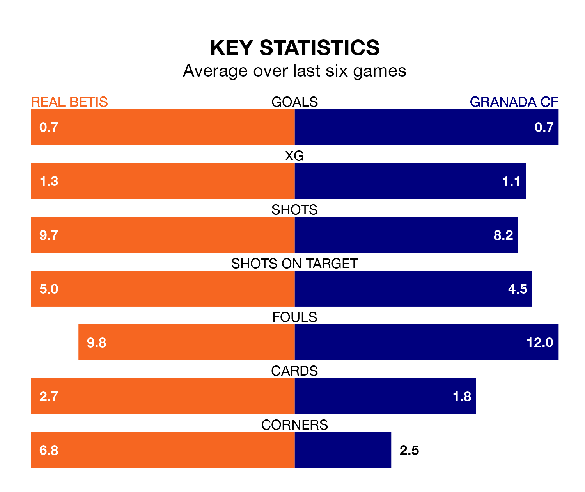

Struggling Granada CF face Real Betis away at the Estadio Benito Villamarín on Saturday looking to build on a win in their last league outing.
After securing all three points with a 2-0 victory over Cádiz on January 3, Granada CF sit 19th in La Liga.
They travel to play a Betis side seventh in the standings, who lost in their last match, 2-1 against Celta de Vigo.
In the last 10 years, Betis and Granada have played each other on 12 occasions. They won four each, and they drew four times.
On average, Real Betis scored 1.2 goals and Granada CF 1.3 in those matches.
Their last meeting was on September 28, when they played out a 1-1 draw.
Betis are in mixed form in La Liga, with one win and four draws from their last six games.
With a win and a draw over that period, Granada's form is worse – they have taken four points from 18, compared to Real Betis's seven.
With 21 goals in 19 games so far this season, the hosts are scoring at below the league average rate with 1.1 goals per game. But they are conceding fewer than average too, letting in 20 goals at a rate of 1.1 per game.
Granada CF are also below average scorers, with 1.2 goals per game, compared to a league average of 1.3. They have conceded 2.1 goals per game.
Updated: 11:29, 08/01/24